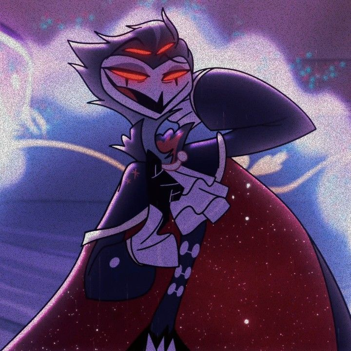
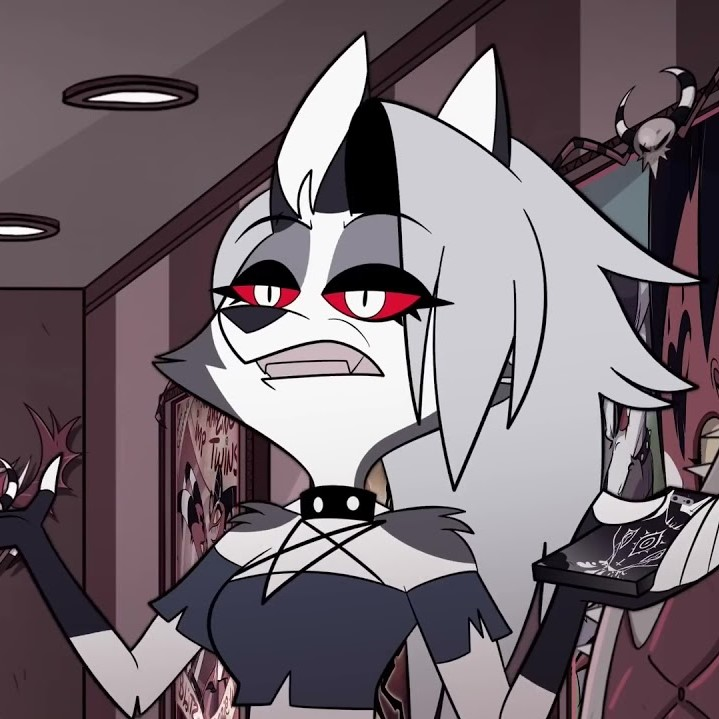
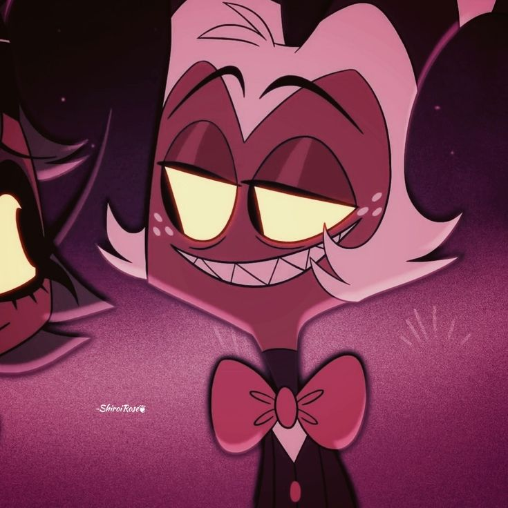
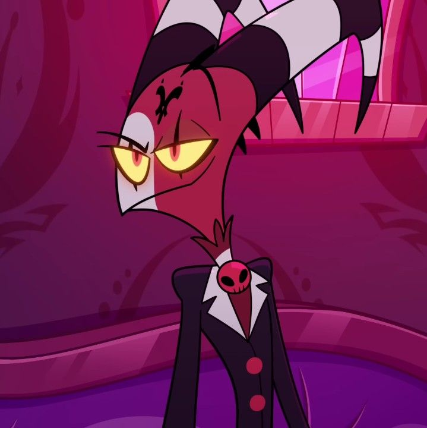
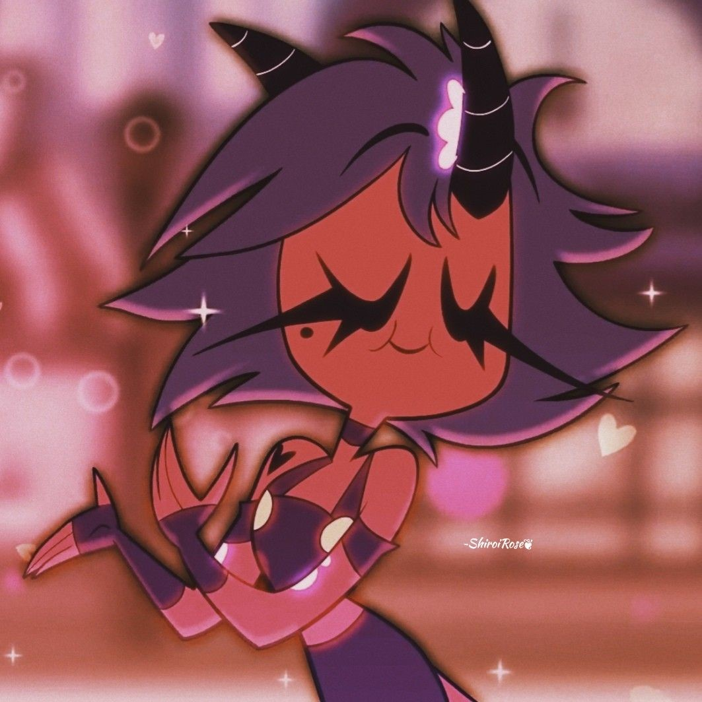
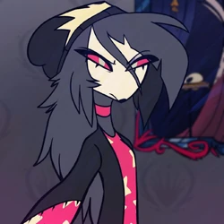

Персонажи

Столас
Принц Столас (озвучивает Брайс Пинкхэм, Брок Бейкер — Пилот) — гоэтиальный демон ада в сложных отношениях с Блитцем. (Бывший) супруг Стеллы, отец Октавии и сын девятого духа Гоетии — Короля Пеймона. Внешне выглядит как антропоморфная сова, что соответствует его образу, в котором он является вызывающим его людям-оккультистам.

Луна
Луна (озвучивает Эрика Линдбек) — адская гончая, секретарша I.M.P. (хотя она почти не выполняет свою работу, как видно из пилота). Обычно её не интересуют дела, которые происходят вокруг. Луна груба и апатична по отношению к своим коллегам. Она — приёмная дочь Блитца, и относится к нему чуть мягче, чем к остальным.

Мокси
Мокси (озвучивает Ричард Стивен Хорвиц) — натуралист из I.M.P., женат на Милли. Его часто раздражает то, что Блитц преследует его и вмешивается в личную жизнь, а также привычка Милли и Блитца без надобности тратить деньги. Имеет садистские наклонности.

Блиц
Блитцø (произносится как Блиц) (озвучивает Брэндон Роджерс) — главный герой мультсериала . Является основателем и менеджером I.M.P. (Immediate Murder Professionals), начинающего предприятия по убийствам, которое оказывает свои услуги в мире живых. Несмотря на это, он плохо управляет своими деньгами и ужасно ведёт бизнес.

Милли
Милли (озвучивает Вивиан Никсон , Эрика Линдбек — Пилот) — громила из I.M.P., замужем за Мокси. Экстраверт, открыто выражает эмоции, позитивна. У неё нет проблем с убийством любого по заказу, даже если это семья.

Окставиа
Октавия (озвучивает Барретт Уилберт) — 17-летняя дочь Столаса. Выглядит как антропоморфная сова.